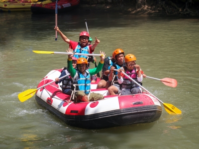
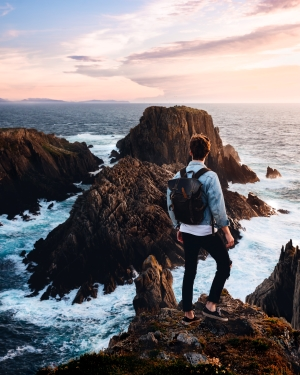

Being In The Nature
Even though we live in houses and big cities we truly belong in the nature. Fresh air, crystal clear water, animals and plants,… It’s what was surrounding us for the most of the human history. Nature inspires people because this is where we come from. And let’s not forget about Vitamin D refill when we are out there having fun in the sun. Join a rafting trip and feel the connection with Mother Earth.
About Rafting

Rafting and whitewater rafting are recreational outdoor activities which use an inflatable raft to navigate a river or other body of water. This is often done on whitewater or different degrees of rough water. Dealing with risk is often a part of the experience
Safty tips
Remember that an experienced guide and a raft load of people help pull you back on the raft if you fall into the river. The life jacket used in white water rafting is an excellent flotation device. In most cases, rafters who fall off the raft are pulled back into the raft immediately.